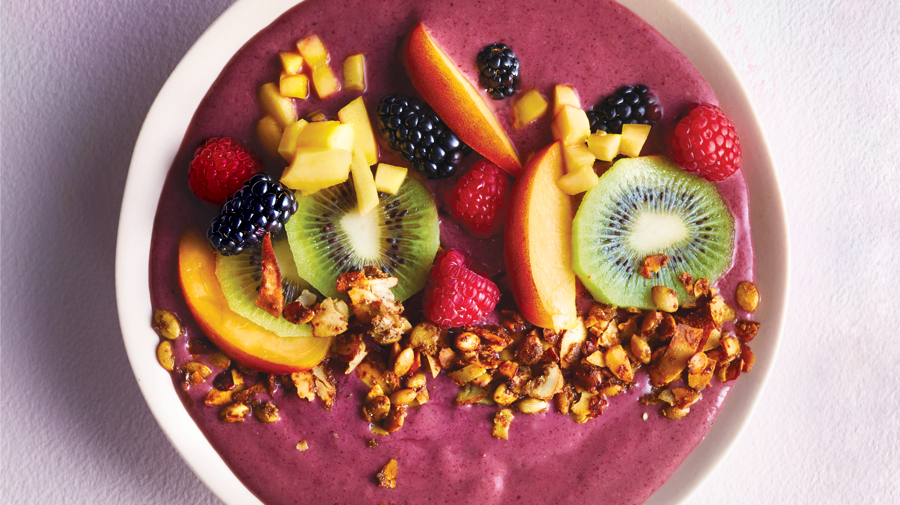

Acai Bowl

Ingredients:
- 1 cup frozen acai puree, slightly thawed
- ¼ cup liquid (like your milk of choice or fruit juice of choice)
- 1 banana
- ½ cup fruit of choice (like strawberries, blueberries, and pineapple)
Steps:
- Slightly thaw the frozen acai puree, either by soaking it in warm water for a few minutes or placing it in the refrigerator overnight.
- Add acai, your liquid of choice, banana, and any other fruits to a high-speed blender.
- Blend until all the frozen chunks are gone and the mixture is thick and smooth.
- Spoon the mixture into a bowl, top with your desired toppings, and serve immediately.
Other Pages: